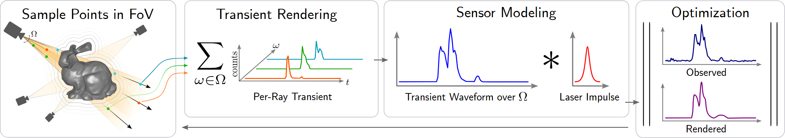

Towards 3D Vision with Low-Cost Single-Photon Cameras CVPR 2024
- Fangzhou Mu *
- Carter Sifferman *
- Sacha Jungerman
- Yiquan Li
- Mark Han
- Michael Gleicher
- Mohit Gupta
- Yin Li University of Wisconsin - Madison
Abstract
We present a method for reconstructing 3D shape of arbitrary Lambertian objects based on measurements by miniature, energy-efficient, low-cost single-photon cameras. These cameras, operating as time resolved image sensors, illuminate the scene with a very fast pulse of diffuse light and record the shape of that pulse as it returns back from the scene at a high temporal resolution. We propose to model this image formation process, account for its non-idealities, and adapt neural rendering to reconstruct 3D geometry from a set of spatially distributed sensors with known poses. We show that our approach can successfully recover complex 3D shapes from simulated data. We further demonstrate 3D object reconstruction from real-world captures, utilizing measurements from a commodity proximity sensor. Our work draws a connection between image-based modeling and active range scanning and is a step towards 3D vision with single-photon cameras.
Method
The scene is modeled as a neural implicit surface in the form of an SDF. To render a transient, we approximate the idealized image formation process by sampling rays within each pixel's FoV, and subsequently points on those rays. This idealized transient waveform is then convolved with the sensor's laser impulse response to model the transient histogram formation. Finally, we optimize the scene representation by minimizing a loss between the rendered transients and the observations.